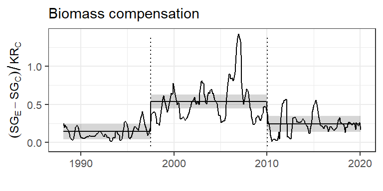

Model.specification AIC
1 intercept + timeperiod + autocorrelation -17.623354
2 intercept + autocorrelation -3.297103
3 intercept + timeperiod 92.184205
4 intercept 207.804481Appendix S3 - Biomass analysis
Renata Diaz ![]()
Background
This is a modified version of Appendix S3 from the article “Maintenance of community function through compensation breaks down over time in a desert rodent community” by Renata Diaz and S. K. Morgan Ernest, now published in Ecology (Diaz and Ernest 2022).
Compensation
Compensation refers to the degree to which the remaining species on kangaroo rat removal plots absorb resources made available via kangaroo rat removal (Figure 1, panel B). We fit a generalized least squares (of the form compensation ~ timeperiod; note that “timeperiod” is coded as “oera” throughout) using the gls function from the R package nlme (Pinheiro, Bates, and R Core Team 2023). Because values from monthly censuses within each time period are subject to temporal autocorrelation, we included a continuous autoregressive temporal autocorrelation structure of order 1 (using the CORCAR1 function). We compared this model to models fit without the autocorrelation structure and without the time period term using AIC. The model with both the time period term and the autocorrelation structure was the best-fitting model via AIC, and we used this model to calculate estimates and contrasts using the package emmeans (Lenth et al. 2023).
Table S1. Model comparison for compensation.
Table S2. Coefficients from GLS for compensation
Note that “oera” is the variable name for the term for time period in these analyses.
Value Std.Error t-value p-value
(Intercept) 0.30814431 0.02905391 10.605950 6.936638e-23
oera.L 0.07114123 0.05141306 1.383719 1.673549e-01
oera.Q -0.27991205 0.04652521 -6.016352 4.624854e-09Table S3. Estimates from GLS for compensation
Timeperiod emmean SE df lower.CL upper.CL
1 1988-1997 0.1435663 0.05114193 39.40368 0.04015581 0.2469767
2 1997-2010 0.5366915 0.04527450 42.04303 0.44532669 0.6280564
3 2010-2020 0.2441751 0.05172050 41.30488 0.13974688 0.3486034Table S4. Contrasts from GLS for compensation
Comparison estimate SE df t.ratio p.value
1 1988-1997 - 1997-2010 -0.3931253 0.06738108 43.35973 -5.834357 0.0000
2 1988-1997 - 2010-2020 -0.1006089 0.07270904 40.49222 -1.383719 0.3588
3 1997-2010 - 2010-2020 0.2925164 0.06780029 44.56438 4.314383 0.0003Total biomass ratio
As for compensation, we fit a generalized least squares of the form total_biomass_ratio ~ timeperiod, accounting for temporal autocorrelation between monthly censuses within each time period using a continuous autoregressive autocorrelation structure of order 1. We compared this model to models fit without the timeperiod term and/or autocorrelation structure, and found the full (timeperiod plus autocorrelation) model had the best performance via AIC. We used this model for estimates and contrasts.
Table S5. Model comparison for total biomass ratio.
Model.specification AIC
1 intercept + timeperiod + autocorrelation -176.57761
2 intercept + autocorrelation -162.61339
3 intercept + timeperiod -15.98438
4 intercept 146.61442Table S6. Coefficients from GLS on total biomass ratio
Note that “oera” is the variable name for the term for time period in these analyses.
Value Std.Error t-value p-value
(Intercept) 0.4553971 0.02724184 16.716827 3.547602e-46
oera.L 0.1454493 0.04779892 3.042941 2.525739e-03
oera.Q -0.2531409 0.04273433 -5.923594 7.735453e-09Table S7. Estimates from GLS on total biomass ratio
Timeperiod emmean SE df lower.CL upper.CL
1 1988-1997 0.2492046 0.04765836 33.83193 0.1523334 0.3460757
2 1997-2010 0.6620857 0.04195145 35.99319 0.5770036 0.7471677
3 2010-2020 0.4549009 0.04802155 34.99486 0.3574115 0.5523903Table S8. Contrasts from GLS on total biomass ratio
Comparison estimate SE df t.ratio p.value
1 1988-1997 - 1997-2010 -0.4128811 0.06217389 38.43597 -6.640747 0.0000
2 1988-1997 - 2010-2020 -0.2056963 0.06759788 34.68472 -3.042941 0.0121
3 1997-2010 - 2010-2020 0.2071848 0.06243247 39.21256 3.318542 0.0054Kangaroo rat (Dipodomys) proportional biomass
Proportional biomass is bounded 0-1 and cannot be fit with generalized least squares. We therefore used a binomial generalized linear model with no temporal autocorrelation term, of the form dipodomys_proportional_biomass ~ timeperiod. We compared a model fit with a timeperiod term to an intercept-only (null) model using AIC, and found the timeperiod term improved model fit. We used this model for estimates and contrasts.
Table S9. Model comparison for Dipodomys proportional biomass.
Model.specification AIC
1 intercept + timeperiod 215.2069
2 intercept 227.9608Table S10. Coefficients from GLM on Dipodomys biomass.
Note that “oera” is the variable name for the term for time period in these analyses. Coefficients are given on the link (logit) scale.
Estimate Std. Error z value Pr(>|z|)
(Intercept) 1.6149566 0.1644937 9.817741 9.443577e-23
oera.L -1.1672395 0.3180813 -3.669626 2.429058e-04
oera.Q 0.6619048 0.2473324 2.676175 7.446776e-03Table S11. Estimates from GLM on Dipodomys biomass.
Note that estimates are back-transformed onto the response scale, for interpretability.
Timeperiod prob SE df asymp.LCL asymp.UCL
1 1988-1997 0.9376458 0.02264595 Inf 0.8932605 0.9820310
2 1997-2010 0.7454543 0.03850245 Inf 0.6699909 0.8209177
3 2010-2020 0.7426552 0.04371710 Inf 0.6569713 0.8283392Table S12. Contrasts from GLM on Dipodomys biomass.
Contrasts are performed on the link (logit) scale.
contrast estimate SE df z.ratio p.value
1 a_pre_pb - b_pre_reorg 1.63602752 0.4372643 Inf 3.74150758 0.0005
2 a_pre_pb - c_post_reorg 1.65072593 0.4498349 Inf 3.66962581 0.0007
3 b_pre_reorg - c_post_reorg 0.01469841 0.3057707 Inf 0.04807003 0.9987C. baileyi proportional biomass
Model specification and selection
As for kangaroo rat proportional biomass, we used a binomial generalized linear model to compare C. baileyi proportional biomass across time periods. Because C. baileyi occurs on both control and exclosure plots, we investigated whether the dynamics of C. baileyi’s proportional biomass differed between treatment types. We compared models incorporating separate slopes, separate intercepts, or no terms for treatment modulating the change in C. baileyi proportional biomass across time periods, i.e. comparing the full set of models:
- cbaileyi_proportional_biomass ~ timeperiod + treatment + timeperiod:treatment
- cbaileyi_proportional_biomass ~ timeperiod + treatment
- cbaileyi_proportional_biomass ~ timeperiod
We also tested a null (intercept-only) model of no change across time periods:
- cbaileyi_proportional_biomass ~ 1
We found that the best-fitting model incorporated effects for time period and for treatment, but no interaction between them (cbaileyi_proportional_biomass ~ timeperiod + treatment). We therefore proceeded with this model.
Table S13. Model comparison for C. baileyi proportional biomass.
Model.specification AIC
1 intercept + timeperiod + treatment + timeperiod:treatment 237.6847
2 intercept + timeperiod + treatment 231.2374
3 intercept + timeperiod 466.4937
4 intercept + treatment 346.2154
5 intercept 543.7811Table S14. Coefficients from GLM on C. baileyi biomass.
Note that “oera” is the variable name for the term for time period in these analyses, and “oplottype” refers to treatment. Coefficients are given on the link (logit) scale.
Estimate Std. Error z value Pr(>|z|)
(Intercept) -1.538798 0.1671239 -9.207525 3.337295e-20
oera.L -1.403286 0.2006948 -6.992140 2.707241e-12
oplottype.L 2.270657 0.2298594 9.878462 5.161898e-23Table S15. Estimates from GLM on C. baileyi biomass
Note that estimates are back-transformed onto the response scale, for interpretability.
Timeperiod Treatment prob SE df asymp.LCL asymp.UCL
1 1997-2010 Control 0.10413311 0.025580043 Inf 0.053997148 0.15426907
2 1997-2010 Exclosure 0.74251323 0.037672724 Inf 0.668676053 0.81635042
3 2010-2020 Control 0.01572477 0.005734104 Inf 0.004486136 0.02696341
4 2010-2020 Exclosure 0.28384385 0.043919238 Inf 0.197763722 0.36992397Table S16. Contrasts from GLM on C. baileyi biomass.
Contrasts are performed on the link (logit) scale.
Comparison Treatment estimate SE df z.ratio p.value
1 1997-2010 - 2010-2020 Control 1.984546 0.2838253 Inf 6.99214 0
2 1997-2010 - 2010-2020 Exclosure 1.984546 0.2838253 Inf 6.99214 0Figure S1. Biomass results

References
Diaz, Renata M., and S. K. Morgan Ernest. 2022. “Maintenance of Community Function Through Compensation Breaks down over Time in a Desert Rodent Community.” Ecology 103 (7): e3709. https://doi.org/10.1002/ecy.3709.
Lenth, Russell V., Ben Bolker, Paul Buerkner, Iago Giné-Vázquez, Maxime Herve, Maarten Jung, Jonathon Love, Fernando Miguez, Hannes Riebl, and Henrik Singmann. 2023. “Emmeans: Estimated Marginal Means, Aka Least-Squares Means.”
Pinheiro, José, Douglas Bates, and R Core Team. 2023. Nlme: Linear and Nonlinear Mixed Effects Models.